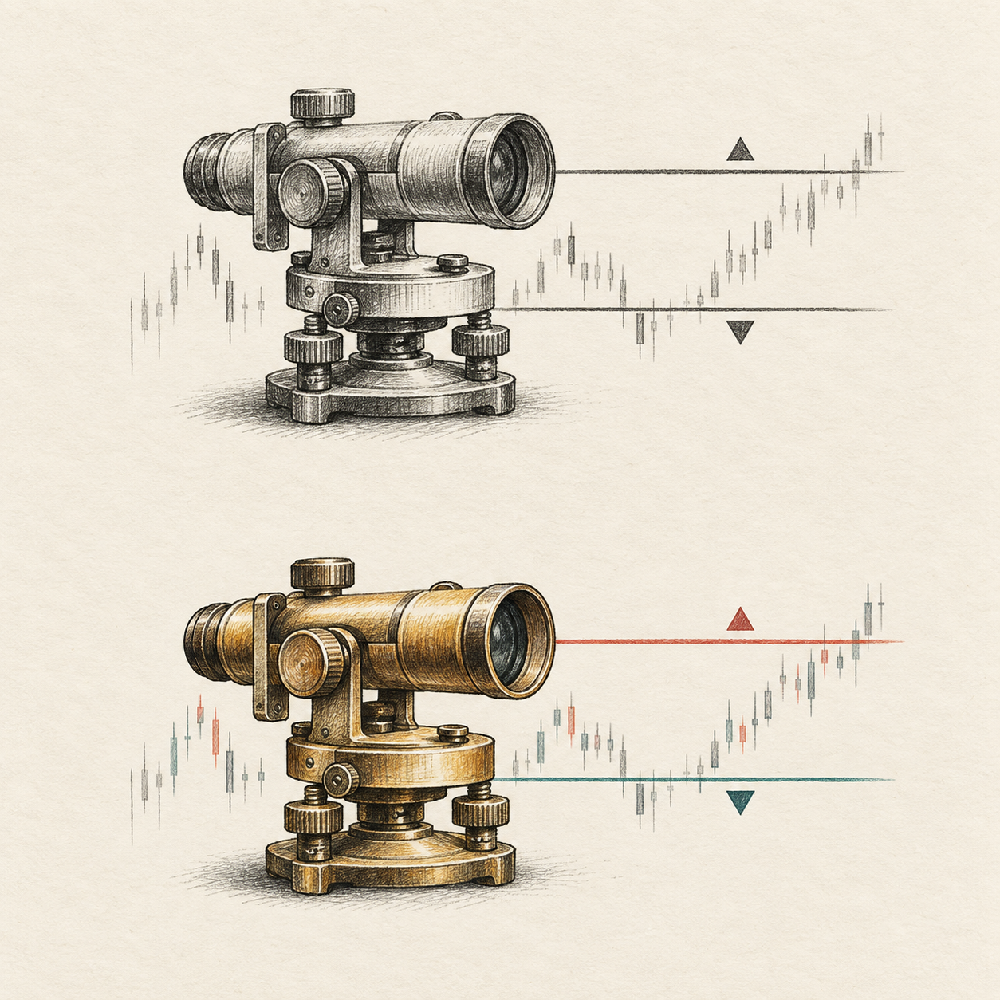

THE INDICATOR RESEARCH ENGINE
Make every signal
earn its probability.
Freeze the question, follow the signal forward, compare precise entry and exit rules, and keep every version tied to its evidence.
50% unmeasured starting mark+3 pp minimum proposed upgrade7 Liquidity timeframes
01 / SIGNALConfirmed lineKnowable after pivot confirmation
02 / OUTCOMETarget before stop?Forward session evidence
SCIENTIST LOOP · LOCAL RESEARCH
THE LIBRARY
Loading catalog…Indicator profiles
Purpose, use, version history, and measured evidence belong together.
INDICATOR DOSSIER
Liquidity
Confirmed external and internal levels

INDICATOR ARTWORK · CHART SCREENSHOTS PENDING CAPTURELIVE EXPERIMENT DESK
Checking observer…Forward measurements
Status refreshes every 20 seconds while this page is open. The local observer checks completed stored bars every minute.
Choose an experiment to read its frozen scope and results.
ONE RECURSIVE LOOP
Submit → research → freeze → measure → evaluate → review → upgrade → deploy
The Scientist leads the method and interprets the evidence. The local observer records only source-tagged completed bars. Batty receives a scoped build prompt after review. A new indicator version needs fresh forward evidence, independent review, and human validation before deployment.
- 30resolved signals per cohort for a pilot
- 200resolved signals per cohort for descriptive review
- 4,356rough independent-arm sample per arm to detect 50% → 53% with 80% power; paired design needs its own power calculation